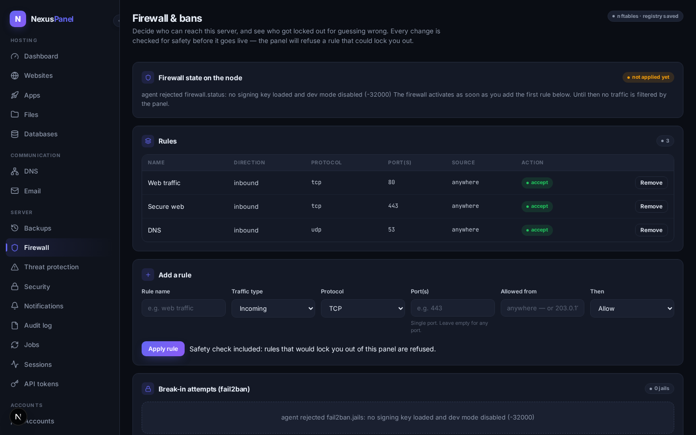
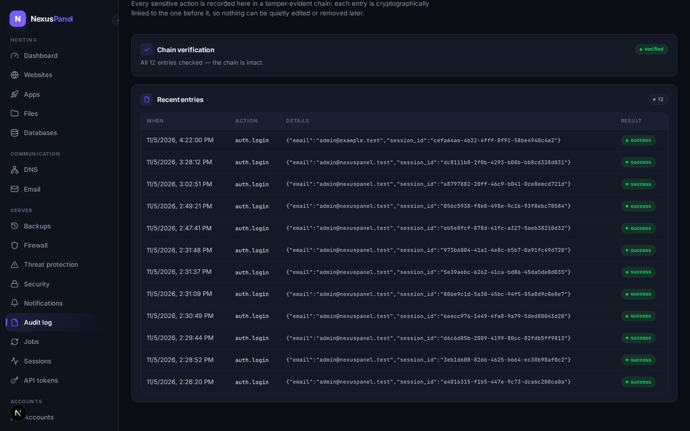

Firewall & bans
The Firewall screen is the panel's view of two things: who is allowed to reach the server (an nftables table the panel manages end to end), and who got locked out for behaving badly (fail2ban jails and their ban lists, read live from the node). Both surfaces speak plain language: rules are named, ports and directions are spelled out, and every change is safety-checked before it goes live.

How rules reach the node live in the panel
Adding or removing a rule never edits one line of a live ruleset. The
panel renders all rules into one managed nftables table
(inet nexuspanel) and asks the agent to apply it as a unit:
first a compile check (nft -c — a broken ruleset never
touches the kernel), then the swap of the previous generation, then the
apply. Only after the agent reports success does the panel write the
registry row. A failed apply leaves the firewall running exactly as it
was and the panel unchanged — the failure, including the agent's
refusal text, is shown to you and recorded in the audit chain
(ADR-0016).
The self-lockout guard agent-enforced
The most dangerous click in any firewall UI is the one that locks you out of your own server. The agent refuses — no matter what the panel asks — any block rule that would sever the management path from an unrestricted source: tcp/22 (ssh), tcp/3000 (the control plane) or tcp/5173 (the panel web), or a block with no port filter at all. The refusal names the exact port: "rule would block the management path (ssh, tcp/22) from any source — refused (self-lockout guard)". If you genuinely need such a rule (for example you manage SSH through something else), the override flag exists and is audited verbatim.
Break-in attempts (fail2ban) live read
The jails card lists what fail2ban on the node reports right now: how many addresses are currently banned, how many in total, and the actual IP list per jail. This is live state, not a copy — the panel keeps no ban database, so what you see is what the node is doing this second. If the agent is unreachable the card says so instead of showing a stale list as if current.
Unban is the only ban action the panel offers, it asks for confirmation, and it is audited. There is deliberately no "ban this IP" button: banning is fail2ban's job (it watches logs and lifts bans on schedule), and a manual ban button would turn a compromised panel session into a denial-of-service weapon. If you want an address blocked permanently, add a firewall rule — it goes through the same safety-checked pipeline as everything else.

What the panel does not do (honest list)
- Live ruleset view requires the agent — with the agent offline the state card reports it; the rules registry still shows what the panel last applied.
- No per-account firewall zones in P5 — rules are server-wide; the reseller-scoped policy layer is future work.
- No NAT/port-forward management, no traffic shaping — v1.0 scope is the filter table only.
- fail2ban jail configuration (maxretry, bantime) is provisioned on the node today; editing jail settings from the panel is planned after the settings pipeline matures.